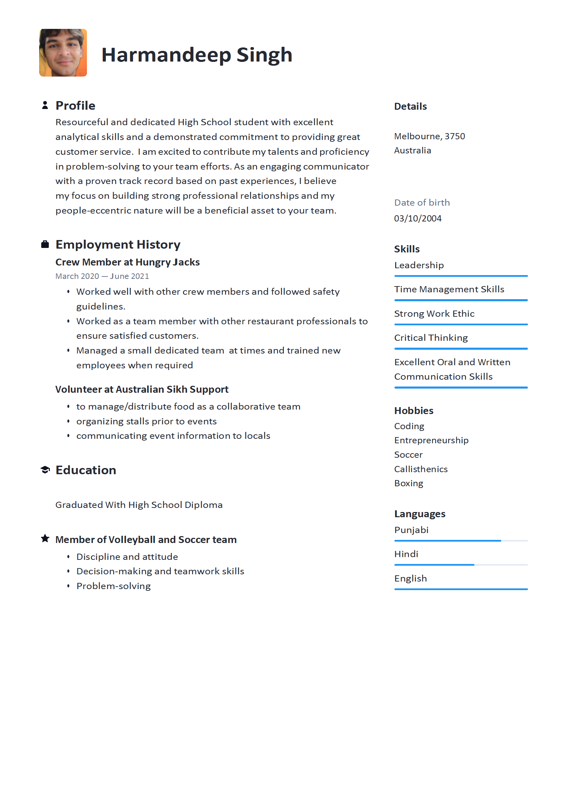
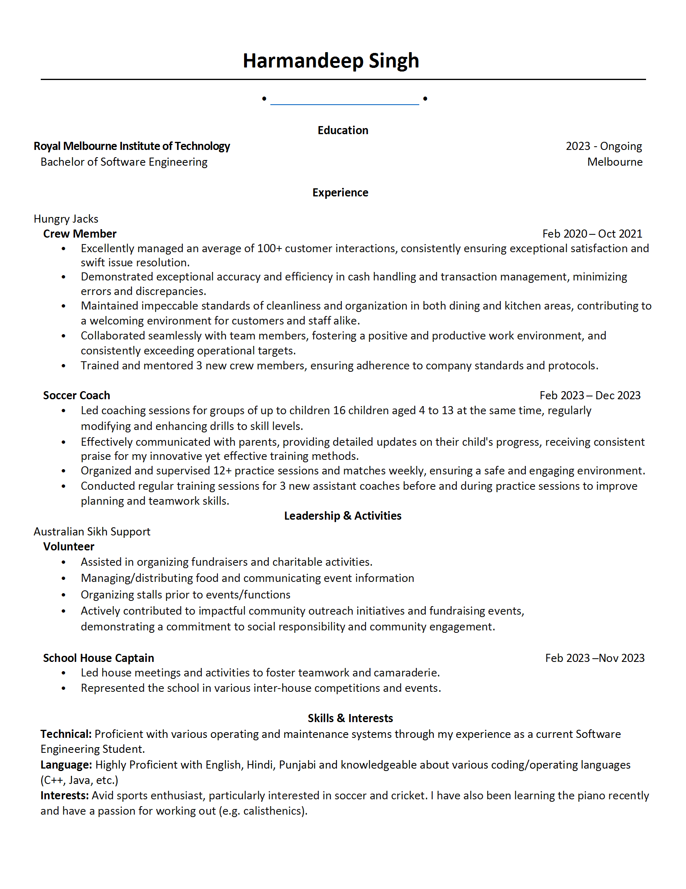

Jan 2020
First resume I created for part-time job applications:
- Added a photo, thinking it was required
- Lots of blank space due to limited experience


Feb 2020
Improved version:
- Removed photo
- Added more details to the experience section
Jun 2023
Resume for part-time jobs:
- Added more real-world experience
- Included a technical skills section


Jun 2023
Improved part-time job resume:
- Focused on relevant skills
- Added an availability table
- Reduced bullet points
Dec 2023
Resume for internship applications:
- Created using a LaTeX template
- Updated project section
- More emphasis on software projects than general skills


May 2023
Improved resume:
- Removed distracting colors
- Condensed into a single page
- Bolded key phrases, focused on statistics-based descriptions
Feb 2022
Resume for internships:
- Streamlined skills and projects sections
- Used LaTeX for creation

Jan 2023
Latest update for internship applications:
- Focused on technical achievements
- Added more projects
- Highlighted measurable outcomes in project descriptions